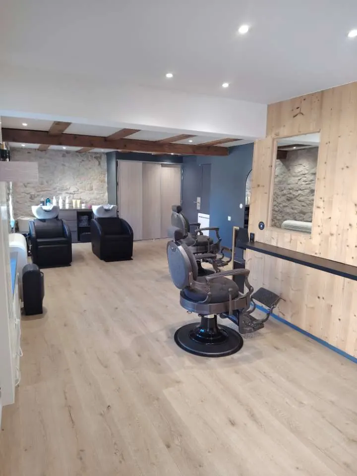
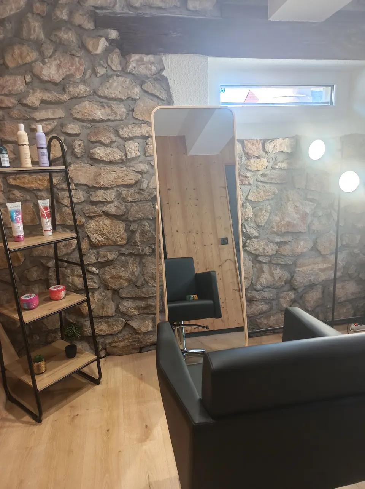
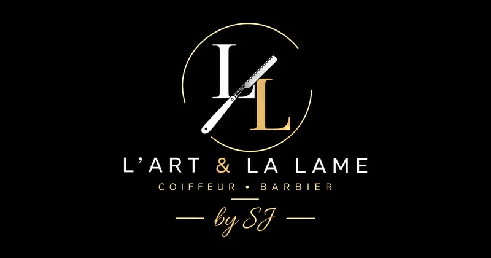

Ammerschwihr · route des vins d'Alsace
Coiffeur & barbier à Ammerschwihr
L'art du geste, la précision de la lame.
Coupes, dégradés, barbes et soins du visage : un salon avant tout dédié aux hommes, avec un espace réservé aux femmes et une place pour les enfants. Samantha et Johan vous reçoivent du lundi au samedi, entre pierre, poutres et bois clair.
Offre d'ouverture −20 % sur toutes les prestations jusqu'au samedi 17 octobre
Du lundi au samedi, sur rendez-vous

Voir la carte & les tarifsLe salon
Deux mains, une même exigence
Samantha et Johan ont ouvert L'Art & La Lame en octobre 2026, au cœur d'Ammerschwihr. Un salon à leur image, chaleureux et soigné : murs de pierre, poutres anciennes, bois de pin clair, fauteuils de barbier à l'ancienne et bacs de lavage confortables.
On y vient pour une coupe nette, un dégradé, une barbe taillée avec soin ou un soin du visage, et pour un vrai conseil sur ce qui vous va. Les femmes ont leur propre espace, les enfants sont les bienvenus : l'ambiance est conviviale et familiale.
- HommeCoupes, dégradés, couronne, barbes minute ou précision, forfaits
- FemmeBrushing, coupe, couleur, mèches, permanente, lissage brésilien
- EnfantCoupe bébé, moins de 10 ans et étudiant, à petit prix

Carte & tarifs
Les prestations du salon
Prix et durées de la carte du salon. Tout se réserve en ligne, sauf les prestations de couleur, de mèches, de permanente et de lissage, qui commencent par un diagnostic.
Offre d'ouverture : les prix réduits de 20 % sont affichés jusqu'au samedi 17 octobre inclus.
À la carte
- Coupe30 min25 €
- Coupe transformation45 min30 €
- Couronne30 min17 €
- Barbe minute20 min15 €
- Barbe précision30 min20 €
Forfaits
- Coupe + barbe précision1 h40 €
- Coupe + barbe précision + soin visage éclat1 h 1550 €
Soin visage, épilation & massage
- Soin visage éclat30 min10 €
- Massage10 min10 €
- Épilation tea-wax, oreilles ou nez30 min7 €
Le soin visage éclat s'ajoute à une coupe et une barbe précision dans le forfait à 50 €.
Enfant & étudiant
- Coupe bébé20 min12 €
- Coupe moins de 10 ans30 min15 €
- Coupe étudiant30 min20 €
Shampooing, brushing & coupe
- Shampooing + brushing, cheveux courts30 min20 €
- Shampooing + brushing, cheveux mi-longs30 min25 €
- Shampooing + brushing, cheveux longs45 min30 €
- Coupe, en supplément du shampooing-brushing10 min+ 10 €
- Soin profond10 min10 €
Une coupe femme se compte donc 30 € (cheveux courts), 35 € (mi-longs) ou 40 € (longs), shampooing et brushing compris.
Coloration
- Coloration racine + shampooing + brushing, cheveux courts1 h 3060 €
- Coloration racine + shampooing + brushing, cheveux mi-longs1 h 4070 €
- Coloration racine + shampooing + brushing, cheveux longs2 h80 €
- Coloration barbe30 min25 €
- Patine30 min20 €
Permanente
- Permanente dessus de tête, cheveux courts1 h 3040 €
- Permanente tête entière + coiffage, cheveux courts1 h 3060 €
Diagnostic avant réservation. Ces prestations ne se réservent pas en ligne : appelez le salon ou passez nous voir. Le diagnostic permet d'évaluer la nature et l'état de vos cheveux, votre historique capillaire et le résultat souhaité.
Appeler le salonÉclaircissement : mèches & balayage
- Décoloration tête entière, cheveux courts1 h 15Sur devis
- Mèches bonnet (dessus de tête), cheveux courts1 h 30Sur devis
- Mèches travaillées, cheveux courts1 h 30Sur devis
- Supplément mèches, cheveux mi-longs1 hSur devis
- Supplément mèches ou balayage, cheveux longs1 h 30Sur devis
Lissage brésilien Lissao
Il lisse, discipline et sublime la chevelure en lui apportant douceur, brillance et souplesse : des cheveux plus faciles à coiffer, aux frisottis visiblement réduits. La durée et le résultat varient selon la nature, la longueur et l'épaisseur des cheveux.
- Cheveux courts2 hSur devis
- Cheveux mi-longs ou épais3 h 10Sur devis
- Cheveux longs4 hSur devis
Diagnostic avant réservation. Le devis s'établit au salon ou par téléphone, après un diagnostic de vos cheveux.
Appeler le salonLe bon forfait
Composez votre passage
Choisissez votre coupe, votre barbe et un soin : le calcul indique le prix, la durée et le forfait à réserver quand il est plus avantageux.
Avis Google
Ce qu'en disent les premiers clients
5,0 sur 5 · 4 avis, octobre 2026
Je recommande vraiment ce salon ! Samantha est toujours aux petits soins, à l'écoute et prend vraiment le temps de comprendre ce qu'on souhaite. On se sent tout de suite bien et chouchoutée, et le résultat est au rendez-vous !
Salon de coiffure vraiment cozy, ambiance sympathique, les patrons sont au top, je recommande.
Une très belle découverte en ce jour d'ouverture ! Bravo à Johan et Samantha pour le lancement de leur salon ! Deux jeunes entrepreneurs qui se lancent à leur compte, avec un salon vraiment chouette, accueillant et où l'on se sent tout de suite bien.
Expérience au top, avec Samantha appliquée, soignée, c'était très agréable, je reviendrai avec plaisir !
Questions
Bon à savoir avant de venir
Comment prendre rendez-vous ?
En ligne sur Planity, 24 h/24, ou par téléphone au 03 67 76 92 47. Les colorations, mèches, balayages, permanentes et lissages ne se réservent pas en ligne : appelez le salon ou passez pour un diagnostic.
Pourquoi un diagnostic avant une couleur ou un lissage ?
Pour évaluer la nature et l'état de vos cheveux, votre historique capillaire et le résultat souhaité, et vous proposer une prestation adaptée. C'est aussi ce qui permet d'établir le devis des mèches, balayages et lissages brésiliens.
Le salon reçoit-il les femmes ?
Oui. Le salon est principalement dédié à la coiffure homme, mais un espace est réservé aux femmes : shampooing et brushing, coupe, soin profond, coloration, patine, mèches, balayage, permanente et lissage brésilien Lissao.
Coupez-vous les cheveux des enfants ?
Oui : coupe bébé 12 € (20 min), coupe pour les moins de 10 ans 15 € (30 min) et coupe étudiant 20 € (30 min).
Barbe minute ou barbe précision ?
La barbe minute (20 min, 15 €) est un entretien rapide ; la barbe précision (30 min, 20 €) laisse plus de temps au tracé et aux finitions. Avec une coupe, le forfait coupe et barbe précision coûte 40 € : le même prix qu'une coupe et une barbe minute prises séparément.
Qu'est-ce que le lissage brésilien Lissao ?
Un soin qui lisse, discipline et apporte brillance et souplesse, avec des frisottis visiblement réduits. Il dure de 2 h pour des cheveux courts à 4 h pour des cheveux longs ; le prix est établi sur devis après diagnostic.
Horaires & accès
Au cœur d'Ammerschwihr
Du lundi au samedi, sur rendez-vous
| Lundi | 9 h – 19 h |
|---|---|
| Mardi | 9 h – 19 h |
| Mercredi | 9 h – 19 h |
| Jeudi | 9 h – 19 h |
| Vendredi | 9 h – 19 h |
| Samedi | 9 h – 15 h |
| Dimanche | Fermé |
1A rue des Charretiers
68770 Ammerschwihr
Entre Colmar et Kaysersberg, sur la route des vins : clients d'Ammerschwihr, de Katzenthal, Kientzheim, Sigolsheim, Ingersheim, Niedermorschwihr, Turckheim et des Trois-Épis.
Le plan Google Maps se charge seulement si vous cliquez.

Réservez en quelques secondes, 24 h/24, ou appelez le salon.